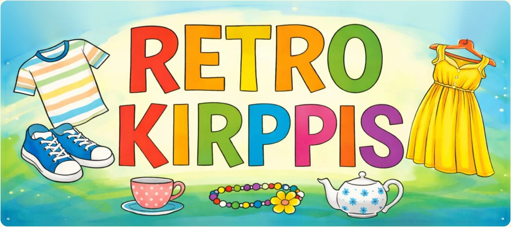
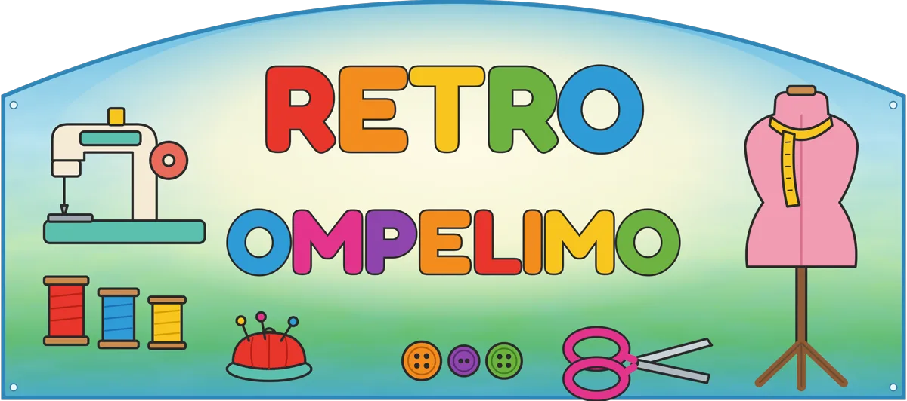
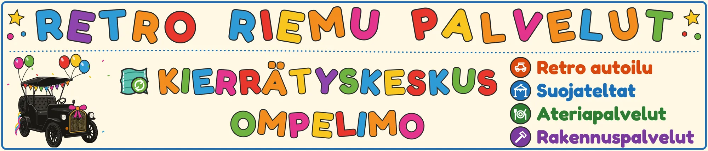

Osto
Tuo tavarasi, me ostamme
Onko kaapissa retrovaatteita, astioita tai muuta tarpeetonta? Tuo ne meille. Isommista eristä kannattaa ottaa ensin yhteyttä.
Kysy ostosta →Kivinokan kesäteatterin alueella, Helsinki
Retrokirppis, kierrätyskeskus ja ompelimo samassa paikassa. Tuo tavarasi – me ostamme. Tule löytämään oma retroaarteesi.

Kierrätyskeskuksemme on täynnä tarinoita: retro- ja vintagevaatteita, kenkiä, astioita, koruja ja kodin pieniä aarteita. Tavara vaihtaa omistajaa ja saa uuden elämän.
Tuo tavarasi, me ostamme
Onko kaapissa retrovaatteita, astioita tai muuta tarpeetonta? Tuo ne meille. Isommista eristä kannattaa ottaa ensin yhteyttä.
Kysy ostosta →Löydä oma retroaarteesi
Valikoima vaihtuu jatkuvasti. Tule tutkimaan hyllyjä – seuraava suosikkimekko tai mummolan kahvikuppi voi odottaa juuri sinua.
Tule käymään →
Kirpputorin yhteydessä toimiva ompelimo pitää vaatteet käytössä pidempään – ja tekee löydöistäsi juuri sinun kokoisiasi.
Vaatteet taas kuntoon: lyhennykset, vetoketjut, paikkaukset ja muut muutostyöt.
Juhlaan tyylillä. Juhla-asujen muokkaukset ja viimeistelyt tärkeisiin hetkiin.
Mukavasti joka päivään. Arkivaatteet istumaan ja palvelemaan pitkään.

Kirpputorin lisäksi järjestämme juhliin ja tapahtumiin kaiken tarvittavan yhdestä paikasta.
Retro autoilu
Ainutlaatuinen retrohenkinen sähköauto häihin, juhliin ja tapahtumiin. Hiljainen, ekologinen ja taatusti mieleenpainuva tapa saapua paikalle.
Tutustu Retroriemu-autoon →
Retroriemu-kirpputori
Kivinokan kesäteatterin alue
Kivinokka, Helsinki
Löydät meidät Kivinokan kesäteatterin alueelta. Tunnistat rakennuksen värikkäästä julkisivusta.
Avaa karttaAjankohtaiset aukioloajat päivitetään tälle sivulle pian.
Kysy aukioloista tai sovi tavaroiden tuonnista sähköpostitse: info@retroriemu.fi
Haluatko myydä tavaroitasi, tilata ompelutyön tai kysyä juhlapalveluista? Lähetä viesti, niin palaamme asiaan mahdollisimman pian.
Sähköposti
info@retroriemu.fi
Retroriemu-auton tarjouspyynnöt: Retroriemu-auton sivulla.